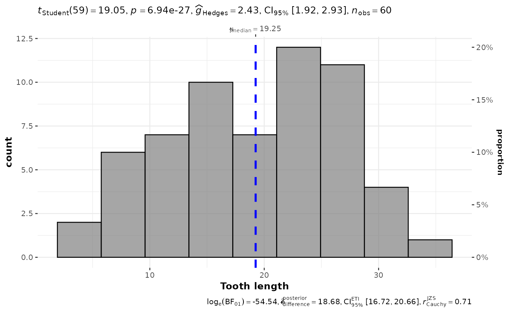

Histogram with statistical details from one-sample test included in the plot as a subtitle.
Usage
gghistostats(
data,
x,
binwidth = NULL,
xlab = NULL,
title = NULL,
subtitle = NULL,
caption = NULL,
type = "parametric",
test.value = 0,
bf.prior = 0.707,
bf.message = TRUE,
effsize.type = "g",
conf.level = 0.95,
tr = 0.2,
digits = 2L,
ggtheme = ggstatsplot::theme_ggstatsplot(),
results.subtitle = TRUE,
bin.args = list(color = "black", fill = "grey50", alpha = 0.7),
centrality.plotting = TRUE,
centrality.type = type,
centrality.line.args = list(color = "blue", linewidth = 1, linetype = "dashed"),
normal.curve = FALSE,
normal.curve.args = list(linewidth = 2),
ggplot.component = NULL,
...
)Arguments
- data
A data frame (or a tibble) from which variables specified are to be taken. Other data types (e.g., matrix,table, array, etc.) will not be accepted. Additionally, grouped data frames from
{dplyr}should be ungrouped before they are entered asdata.- x
A numeric variable from the data frame
data.- binwidth
The width of the histogram bins. Can be specified as a numeric value, or a function that calculates width from
x. The default is to use themax(x) - min(x) / sqrt(N). You should always check this value and explore multiple widths to find the best to illustrate the stories in your data.- xlab
Label for
xaxis variable. IfNULL(default), variable name forxwill be used.- title
The text for the plot title.
- subtitle
The text for the plot subtitle. Will work only if
results.subtitle = FALSE.- caption
The text for the plot caption. This argument is relevant only if
bf.message = FALSE.- type
A character specifying the type of statistical approach:
"parametric""nonparametric""robust""bayes"
You can specify just the initial letter.
- test.value
A number indicating the true value of the mean (Default:
0).- bf.prior
A number between
0.5and2(default0.707), the prior width to use in calculating Bayes factors and posterior estimates. In addition to numeric arguments, several named values are also recognized:"medium","wide", and"ultrawide", corresponding to r scale values of 1/2, sqrt(2)/2, and 1, respectively. In case of an ANOVA, this value corresponds to scale for fixed effects.- bf.message
Logical that decides whether to display Bayes Factor in favor of the null hypothesis. This argument is relevant only for parametric test (Default:
TRUE).- effsize.type
Type of effect size needed for parametric tests. The argument can be
"d"(for Cohen's d) or"g"(for Hedge's g).- conf.level
Scalar between
0and1(default:95%confidence/credible intervals,0.95). IfNULL, no confidence intervals will be computed.- tr
Trim level for the mean when carrying out
robusttests. In case of an error, try reducing the value oftr, which is by default set to0.2. Lowering the value might help.- digits
Number of digits for rounding or significant figures. May also be
"signif"to return significant figures or"scientific"to return scientific notation. Control the number of digits by adding the value as suffix, e.g.digits = "scientific4"to have scientific notation with 4 decimal places, ordigits = "signif5"for 5 significant figures (see alsosignif()).- ggtheme
A
{ggplot2}theme. Default value isggstatsplot::theme_ggstatsplot(). Any of the{ggplot2}themes (e.g.,theme_bw()), or themes from extension packages are allowed (e.g.,ggthemes::theme_fivethirtyeight(),hrbrthemes::theme_ipsum_ps(), etc.). But note that sometimes these themes will remove some of the details that{ggstatsplot}plots typically contains. For example, if relevant,ggbetweenstats()shows details about multiple comparison test as a label on the secondary Y-axis. Some themes (e.g.ggthemes::theme_fivethirtyeight()) will remove the secondary Y-axis and thus the details as well.- results.subtitle
Decides whether the results of statistical tests are to be displayed as a subtitle (Default:
TRUE). If set toFALSE, only the plot will be returned.- bin.args
A list of additional aesthetic arguments to be passed to the
stat_binused to display the bins. Do not specifybinwidthargument in this list since it has already been specified using the dedicated argument.- centrality.plotting
Logical that decides whether centrality tendency measure is to be displayed as a point with a label (Default:
TRUE). Function decides which central tendency measure to show depending on thetypeargument.mean for parametric statistics
median for non-parametric statistics
trimmed mean for robust statistics
MAP estimator for Bayesian statistics
If you want default centrality parameter, you can specify this using
centrality.typeargument.- centrality.type
Decides which centrality parameter is to be displayed. The default is to choose the same as
typeargument. You can specify this to be:"parameteric"(for mean)"nonparametric"(for median)robust(for trimmed mean)bayes(for MAP estimator)
Just as
typeargument, abbreviations are also accepted.- centrality.line.args
A list of additional aesthetic arguments to be passed to the
geom_lineused to display the lines corresponding to the centrality parameter.- normal.curve
A logical value that decides whether to super-impose a normal curve using
stats::dnorm(mean(x), stats::sd(x)). Default isFALSE.- normal.curve.args
A list of additional aesthetic arguments to be passed to the normal curve.
- ggplot.component
A
ggplotcomponent to be added to the plot prepared by{ggstatsplot}. This argument is primarily helpful forgrouped_variants of all primary functions. Default isNULL. The argument should be entered as a{ggplot2}function or a list of{ggplot2}functions.- ...
Currently ignored.
Details
For details, see: https://indrajeetpatil.github.io/ggstatsplot/articles/web_only/gghistostats.html
Summary of graphics
| graphical element | geom used | argument for further modification |
| histogram bin | ggplot2::stat_bin() | bin.args |
| centrality measure line | ggplot2::geom_vline() | centrality.line.args |
| normality curve | ggplot2::stat_function() | normal.curve.args |
One-sample tests
The table below provides summary about:
statistical test carried out for inferential statistics
type of effect size estimate and a measure of uncertainty for this estimate
functions used internally to compute these details
Hypothesis testing
| Type | Test | Function used |
| Parametric | One-sample Student's t-test | stats::t.test() |
| Non-parametric | One-sample Wilcoxon test | stats::wilcox.test() |
| Robust | Bootstrap-t method for one-sample test | WRS2::trimcibt() |
| Bayesian | One-sample Student's t-test | BayesFactor::ttestBF() |
Effect size estimation
| Type | Effect size | CI available? | Function used |
| Parametric | Cohen's d, Hedge's g | Yes | effectsize::cohens_d(), effectsize::hedges_g() |
| Non-parametric | r (rank-biserial correlation) | Yes | effectsize::rank_biserial() |
| Robust | trimmed mean | Yes | WRS2::trimcibt() |
| Bayes Factor | difference | Yes | bayestestR::describe_posterior() |
Examples
# for reproducibility
set.seed(123)
# creating a plot
p <- gghistostats(
data = ToothGrowth,
x = len,
xlab = "Tooth length",
centrality.type = "np"
)
# looking at the plot
p

# extracting details from statistical tests
extract_stats(p)
#> $subtitle_data
#> # A tibble: 1 × 15
#> mu statistic df.error p.value method alternative effectsize
#> <dbl> <dbl> <dbl> <dbl> <chr> <chr> <chr>
#> 1 0 19.1 59 6.94e-27 One Sample t-test two.sided Hedges' g
#> estimate conf.level conf.low conf.high conf.method conf.distribution n.obs
#> <dbl> <dbl> <dbl> <dbl> <chr> <chr> <int>
#> 1 2.43 0.95 1.92 2.93 ncp t 60
#> expression
#> <list>
#> 1 <language>
#>
#> $caption_data
#> # A tibble: 1 × 16
#> term effectsize estimate conf.level conf.low conf.high pd
#> <chr> <chr> <dbl> <dbl> <dbl> <dbl> <dbl>
#> 1 Difference Bayesian t-test 18.7 0.95 16.7 20.7 1
#> prior.distribution prior.location prior.scale bf10 method
#> <chr> <dbl> <dbl> <dbl> <chr>
#> 1 cauchy 0 0.707 4.86e23 Bayesian t-test
#> conf.method log_e_bf10 n.obs expression
#> <chr> <dbl> <int> <list>
#> 1 ETI 54.5 60 <language>
#>
#> $pairwise_comparisons_data
#> NULL
#>
#> $descriptive_data
#> NULL
#>
#> $one_sample_data
#> NULL
#>
#> $tidy_data
#> NULL
#>
#> $glance_data
#> NULL
#>